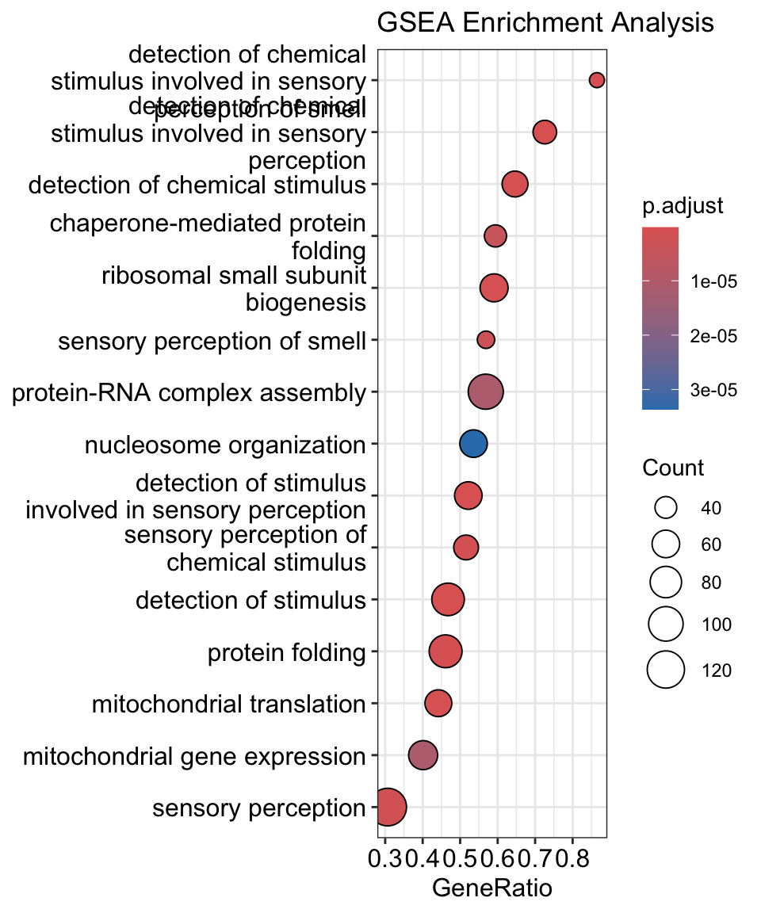
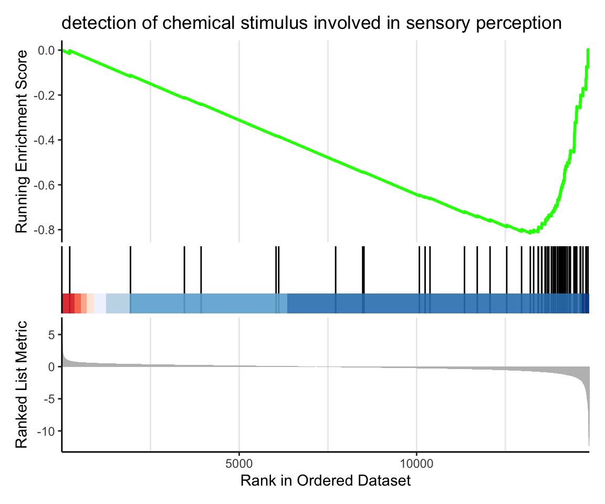

Differential Expression Analysis using DESeq2 (Tidyverse)
Author
Chirag Parsania
Published
February 27, 2025
Load Data
data <-read_tsv("ago2_ko_counts.txt") %>%column_to_rownames(var ="gene_id")
Rows: 17194 Columns: 7
── Column specification ────────────────────────────────────────────────────────
Delimiter: "\t"
chr (1): gene_id
dbl (6): A2_KO_1, A2_KO_2, A2_KO_3, WT_1, WT_2, WT_3
ℹ Use `spec()` to retrieve the full column specification for this data.
ℹ Specify the column types or set `show_col_types = FALSE` to quiet this message.
Warning in preparePathwaysAndStats(pathways, stats, minSize, maxSize, gseaParam, : There are ties in the preranked stats (0.03% of the list).
The order of those tied genes will be arbitrary, which may produce unexpected results.
Warning in fgseaMultilevel(pathways = pathways, stats = stats, minSize =
minSize, : There were 83 pathways for which P-values were not calculated
properly due to unbalanced (positive and negative) gene-level statistic values.
For such pathways pval, padj, NES, log2err are set to NA. You can try to
increase the value of the argument nPermSimple (for example set it nPermSimple
= 10000)
Warning in fgseaMultilevel(pathways = pathways, stats = stats, minSize =
minSize, : For some of the pathways the P-values were likely overestimated. For
such pathways log2err is set to NA.
Warning in fgseaMultilevel(pathways = pathways, stats = stats, minSize =
minSize, : For some pathways, in reality P-values are less than 1e-10. You can
set the `eps` argument to zero for better estimation.
dotplot(gsea_result, showCategory =15, title ="GSEA Enrichment Analysis")

GSEA vizualisation
id=1enrichplot::gseaplot2(gsea_result, geneSetID = id, title = gsea_result$Description[id])

id=2enrichplot::gseaplot2(gsea_result, geneSetID = id, title = gsea_result$Description[id])